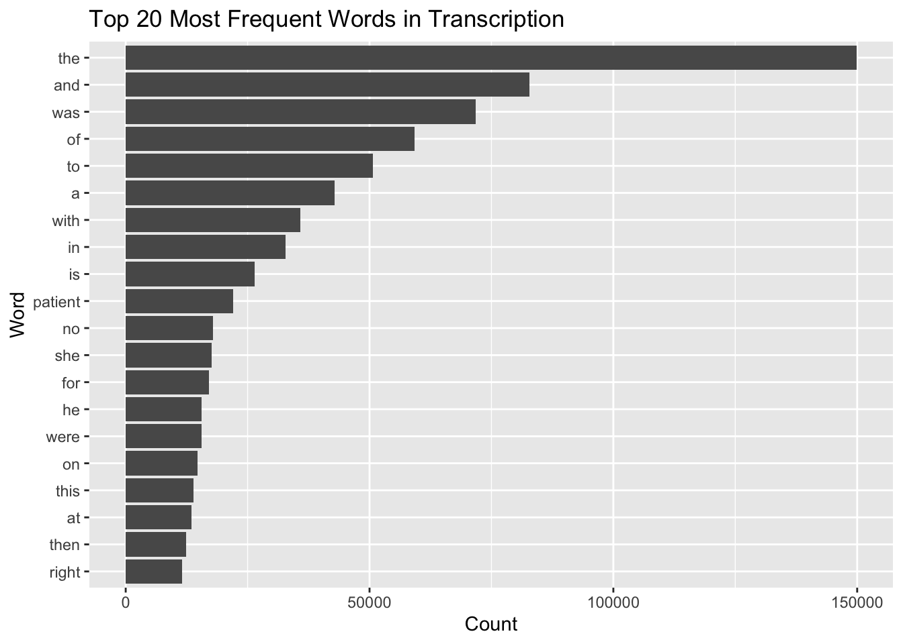
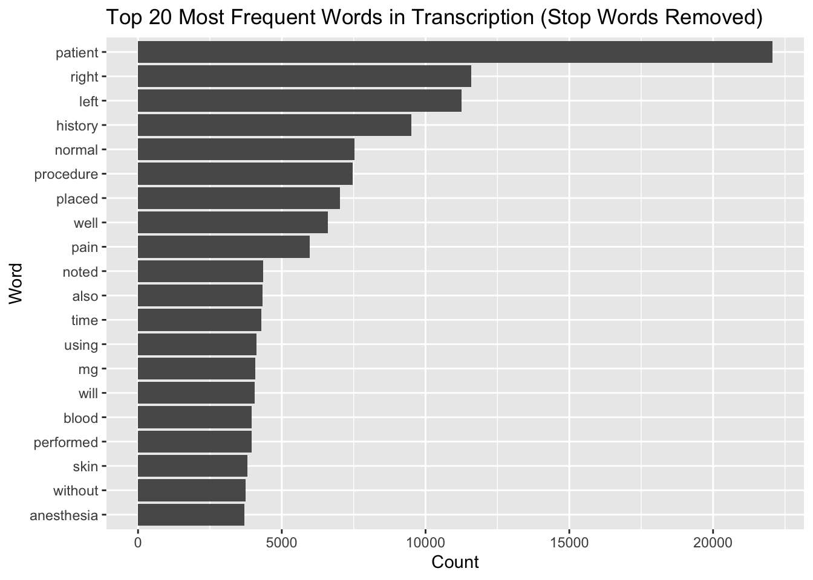
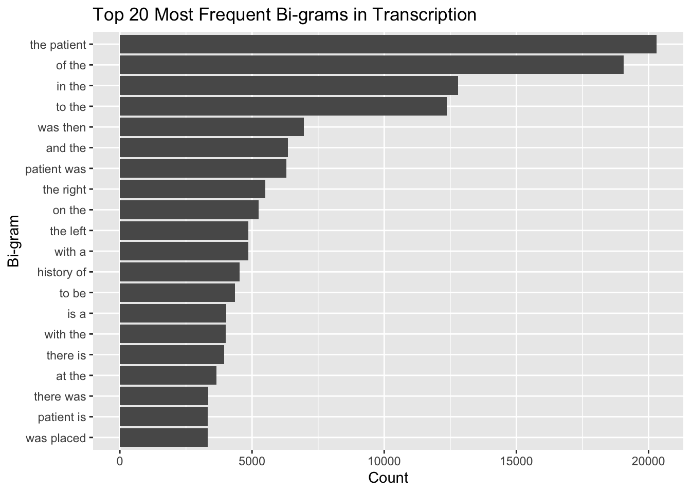
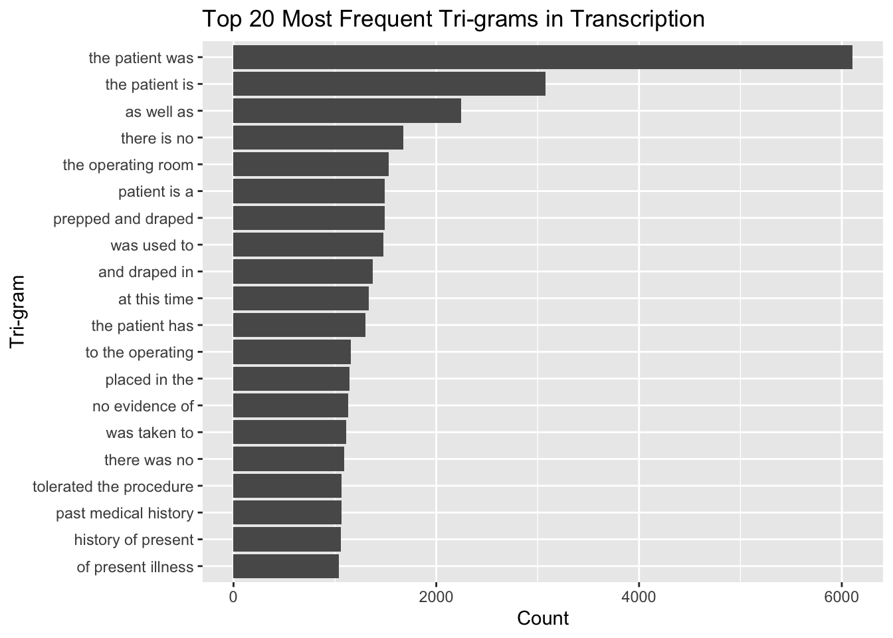
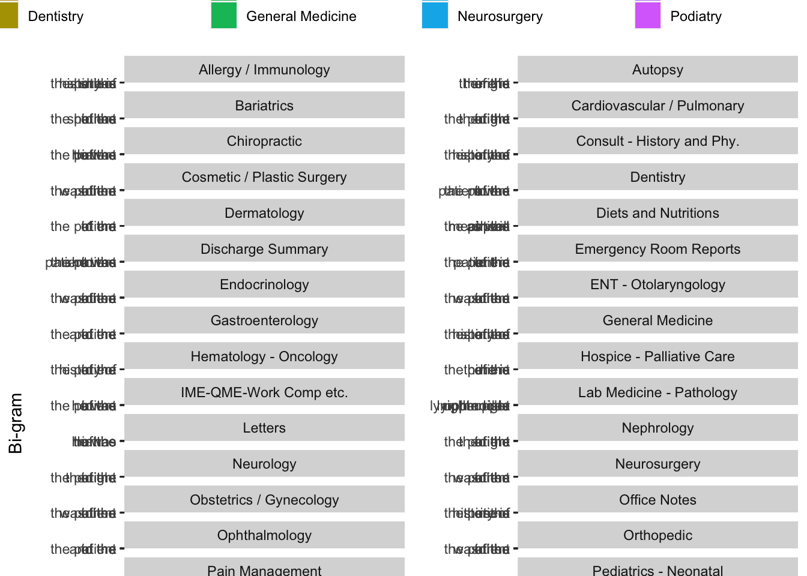

#knitr::opts_chunk$set(eval = FALSE, include = FALSE)Lab 06 - Text Mining
Lab 06 - Text Mining
Learning goals
Use
unnest_tokens()andunnest_ngrams()to extract tokens and ngrams from text.Use dplyr and ggplot2 to analyze text data
Lab description
For this lab we will be working with a new dataset. The dataset contains transcription samples from https://www.mtsamples.com/. And is loaded and “fairly” cleaned at https://raw.githubusercontent.com/USCbiostats/data-science-data/master/00_mtsamples/mtsamples.csv.
This markdown document should be rendered using github_document document.
Setup packages
You should load in dplyr, (or data.table if you want to work that way), ggplot2 and tidytext. If you don’t already have tidytext then you can install with
library(tidytext)
library(tidyverse)── Attaching core tidyverse packages ──────────────────────── tidyverse 2.0.0 ──
✔ dplyr 1.1.3 ✔ readr 2.1.4
✔ forcats 1.0.0 ✔ stringr 1.5.0
✔ ggplot2 3.4.3 ✔ tibble 3.2.1
✔ lubridate 1.9.2 ✔ tidyr 1.3.0
✔ purrr 1.0.2
── Conflicts ────────────────────────────────────────── tidyverse_conflicts() ──
✖ dplyr::filter() masks stats::filter()
✖ dplyr::lag() masks stats::lag()
ℹ Use the conflicted package (<http://conflicted.r-lib.org/>) to force all conflicts to become errorslibrary(knitr)
library(dplyr)
library(ggplot2)
library(data.table)
Attaching package: 'data.table'
The following objects are masked from 'package:lubridate':
hour, isoweek, mday, minute, month, quarter, second, wday, week,
yday, year
The following objects are masked from 'package:dplyr':
between, first, last
The following object is masked from 'package:purrr':
transposelibrary(tm)Loading required package: NLP
Attaching package: 'NLP'
The following object is masked from 'package:ggplot2':
annotateread in Medical Transcriptions
Loading in reference transcription samples from https://www.mtsamples.com/
library(readr)
library(dplyr)
mt_samples <- read_csv("https://raw.githubusercontent.com/USCbiostats/data-science-data/master/00_mtsamples/mtsamples.csv")New names:
Rows: 4999 Columns: 6
── Column specification
──────────────────────────────────────────────────────── Delimiter: "," chr
(5): description, medical_specialty, sample_name, transcription, keywords dbl
(1): ...1
ℹ Use `spec()` to retrieve the full column specification for this data. ℹ
Specify the column types or set `show_col_types = FALSE` to quiet this message.
• `` -> `...1`mt_samples <- mt_samples %>%
select(description, medical_specialty, transcription)
head(mt_samples)# A tibble: 6 × 3
description medical_specialty transcription
<chr> <chr> <chr>
1 A 23-year-old white female presents with comp… Allergy / Immuno… "SUBJECTIVE:…
2 Consult for laparoscopic gastric bypass. Bariatrics "PAST MEDICA…
3 Consult for laparoscopic gastric bypass. Bariatrics "HISTORY OF …
4 2-D M-Mode. Doppler. Cardiovascular /… "2-D M-MODE:…
5 2-D Echocardiogram Cardiovascular /… "1. The lef…
6 Morbid obesity. Laparoscopic antecolic anteg… Bariatrics "PREOPERATIV…Question 1: What specialties do we have?
We can use count() from dplyr to figure out how many different catagories do we have? Are these catagories related? overlapping? evenly distributed?
mt_samples %>%
count(medical_specialty, sort = TRUE)# A tibble: 40 × 2
medical_specialty n
<chr> <int>
1 Surgery 1103
2 Consult - History and Phy. 516
3 Cardiovascular / Pulmonary 372
4 Orthopedic 355
5 Radiology 273
6 General Medicine 259
7 Gastroenterology 230
8 Neurology 223
9 SOAP / Chart / Progress Notes 166
10 Obstetrics / Gynecology 160
# ℹ 30 more rowsQuestion 2
Tokenize the the words in the
transcriptioncolumnCount the number of times each token appears
Visualize the top 20 most frequent words
Explain what we see from this result. Does it makes sense? What insights (if any) do we get?
# Tokenize the words
tokenized <- mt_samples %>% unnest_tokens(word, transcription)
tokenized# A tibble: 2,403,596 × 3
description medical_specialty word
<chr> <chr> <chr>
1 A 23-year-old white female presents with complaint o… Allergy / Immuno… subj…
2 A 23-year-old white female presents with complaint o… Allergy / Immuno… this
3 A 23-year-old white female presents with complaint o… Allergy / Immuno… 23
4 A 23-year-old white female presents with complaint o… Allergy / Immuno… year
5 A 23-year-old white female presents with complaint o… Allergy / Immuno… old
6 A 23-year-old white female presents with complaint o… Allergy / Immuno… white
7 A 23-year-old white female presents with complaint o… Allergy / Immuno… fema…
8 A 23-year-old white female presents with complaint o… Allergy / Immuno… pres…
9 A 23-year-old white female presents with complaint o… Allergy / Immuno… with
10 A 23-year-old white female presents with complaint o… Allergy / Immuno… comp…
# ℹ 2,403,586 more rows# Count the number of times each token appears
word_counts <- tokenized %>% count(word, sort = TRUE)
word_counts# A tibble: 23,647 × 2
word n
<chr> <int>
1 the 149888
2 and 82779
3 was 71765
4 of 59205
5 to 50632
6 a 42810
7 with 35815
8 in 32807
9 is 26378
10 patient 22065
# ℹ 23,637 more rows# Top 20 most frequent words
top_20_words <- word_counts %>% slice_head(n = 20)
top_20_words# A tibble: 20 × 2
word n
<chr> <int>
1 the 149888
2 and 82779
3 was 71765
4 of 59205
5 to 50632
6 a 42810
7 with 35815
8 in 32807
9 is 26378
10 patient 22065
11 no 17874
12 she 17593
13 for 17049
14 he 15542
15 were 15535
16 on 14694
17 this 13949
18 at 13492
19 then 12430
20 right 11587ggplot(top_20_words, aes(x = reorder(word, n), y = n)) +
geom_col() +
coord_flip() +
labs(title = "Top 20 Most Frequent Words in Transcription",
x = "Word",
y = "Count")
Question 3
Redo visualization but remove stopwords before
Bonus points if you remove numbers as well
What do we see know that we have removed stop words? Does it give us a better idea of what the text is about?
cleaned_tokens <- mt_samples %>%
unnest_tokens(word, transcription) %>%
mutate(word = tolower(word)) %>%
filter(!word %in% stopwords("en")) %>%
filter(!str_detect(word, "\\d+"))
word_freq <- cleaned_tokens %>%
count(word, sort = TRUE)
top_20_words <- word_freq %>%
slice_head(n = 20)
ggplot(top_20_words, aes(x = reorder(word, n), y = n)) +
geom_col() +
coord_flip() +
labs(title = "Top 20 Most Frequent Words in Transcription (Stop Words Removed)",
x = "Word",
y = "Count")
Question 4
Repeat question 2, but this time tokenize into bi-grams. how does the result change if you look at tri-grams?
bi_grams <- mt_samples %>% unnest_tokens(bigram, transcription, token = "ngrams", n = 2)
tri_grams <- mt_samples %>% unnest_tokens(trigram, transcription, token = "ngrams", n = 3)
bi_gram_counts <- bi_grams %>%count(bigram, sort = TRUE)
tri_gram_counts <- tri_grams %>%count(trigram, sort = TRUE)
top_20_bi_grams <- bi_gram_counts %>%
slice_head(n = 20)
top_20_tri_grams <- tri_gram_counts %>%
slice_head(n = 20)
ggplot(top_20_bi_grams, aes(x = reorder(bigram, n), y = n)) +
geom_col() +
coord_flip() +
labs(title = "Top 20 Most Frequent Bi-grams in Transcription",
x = "Bi-gram",
y = "Count")
ggplot(top_20_tri_grams, aes(x = reorder(trigram, n), y = n)) +
geom_col() +
coord_flip() +
labs(title = "Top 20 Most Frequent Tri-grams in Transcription",
x = "Tri-gram",
y = "Count")
Question 5
Using the results you got from questions 4. Pick a word and count the words that appears after and before it.
target_word <- "history of"
bi_grams_with_target <- bi_grams %>%
filter(str_detect(bigram, target_word))
bi_grams_split <- bi_grams_with_target %>%
separate(bigram, into = c("word_before", "word_after"), sep = " ")
word_counts_around_target <- bi_grams_split %>%
filter(word_before != target_word & word_after != target_word) %>%
group_by(word_before, word_after) %>%
summarise(count = n()) %>%
ungroup() %>%
arrange(desc(count))`summarise()` has grouped output by 'word_before'. You can override using the
`.groups` argument.word_counts_around_target# A tibble: 1 × 3
word_before word_after count
<chr> <chr> <int>
1 history of 4537Question 6
Which words are most used in each of the specialties. you can use group_by() and top_n() from dplyr to have the calculations be done within each specialty. Remember to remove stopwords. How about the most 5 used words?
cleaned_tokens <- mt_samples %>%
unnest_tokens(word, transcription) %>%
mutate(word = tolower(word)) %>%
anti_join(stop_words)Joining with `by = join_by(word)`specialty_word_counts <- cleaned_tokens %>%
group_by(medical_specialty, word) %>%
summarise(count = n()) %>%
ungroup()`summarise()` has grouped output by 'medical_specialty'. You can override using
the `.groups` argument.top_5_words_by_specialty <- specialty_word_counts %>%
group_by(medical_specialty) %>%
top_n(5, count) %>%
arrange(medical_specialty, desc(count))
top_1_word_by_specialty <- specialty_word_counts %>%
group_by(medical_specialty) %>%
top_n(1, count) %>%
arrange(medical_specialty, desc(count))
top_5_words_by_specialty# A tibble: 209 × 3
# Groups: medical_specialty [40]
medical_specialty word count
<chr> <chr> <int>
1 Allergy / Immunology history 38
2 Allergy / Immunology noted 23
3 Allergy / Immunology patient 22
4 Allergy / Immunology allergies 21
5 Allergy / Immunology nasal 13
6 Allergy / Immunology past 13
7 Autopsy left 83
8 Autopsy 1 66
9 Autopsy inch 59
10 Autopsy neck 55
# ℹ 199 more rowstop_1_word_by_specialty# A tibble: 41 × 3
# Groups: medical_specialty [40]
medical_specialty word count
<chr> <chr> <int>
1 Allergy / Immunology history 38
2 Autopsy left 83
3 Bariatrics patient 62
4 Cardiovascular / Pulmonary left 1550
5 Chiropractic pain 187
6 Consult - History and Phy. patient 3046
7 Cosmetic / Plastic Surgery patient 116
8 Dentistry patient 195
9 Dermatology 1 102
10 Diets and Nutritions patient 43
# ℹ 31 more rowsQuestion 7 - extra
Find your own insight in the data:
Ideas:
Interesting ngrams
See if certain words are used more in some specialties then others
bi_grams <- mt_samples %>%
unnest_tokens(bigram, transcription, token = "ngrams", n = 2)
stop_words <- data.frame(word = stopwords("en"))
bi_grams_cleaned <- bi_grams %>%
filter(!bigram %in% stop_words$word)
bi_gram_counts <- bi_grams_cleaned %>%
group_by(medical_specialty, bigram) %>%
summarise(count = n(), .groups = "drop")
top_5_bi_grams <- bi_gram_counts %>%
group_by(medical_specialty) %>%
top_n(5, count) %>%
arrange(medical_specialty, desc(count))
ggplot(top_5_bi_grams, aes(x = reorder(bigram, count), y = count, fill = medical_specialty)) +
geom_col() +
coord_flip() +
labs(title = "Top 5 Bi-grams in Transcriptions by Medical Specialty",
x = "Bi-gram",
y = "Count",
fill = "Medical Specialty") +
theme(legend.position = "top") +
facet_wrap(~medical_specialty, scales = "free_y", ncol = 2)